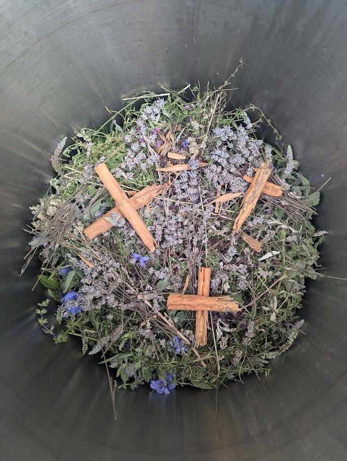
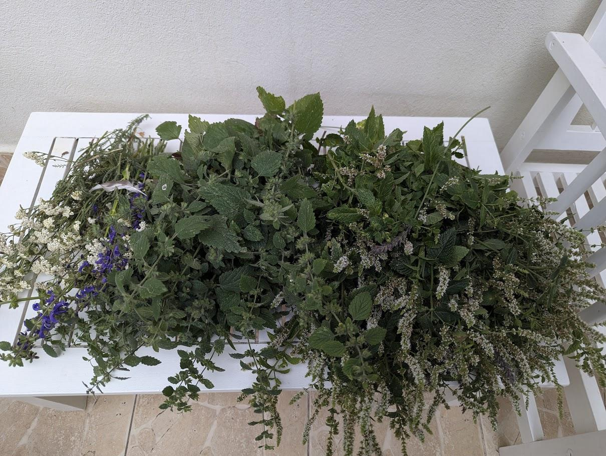
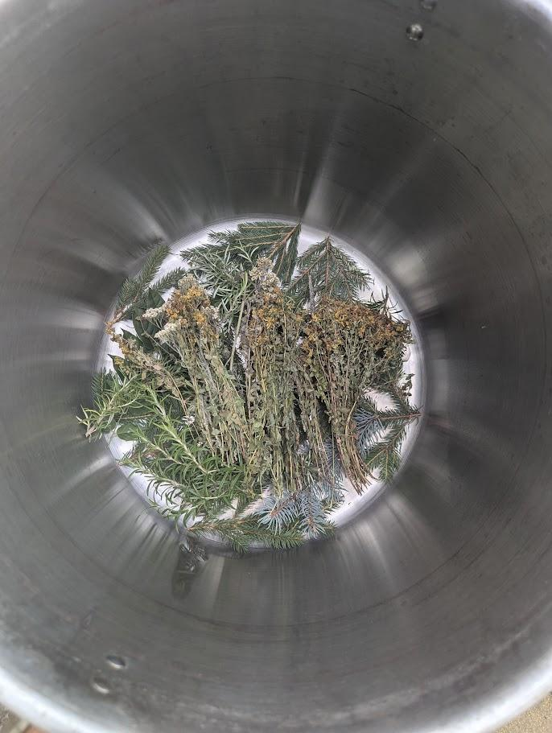
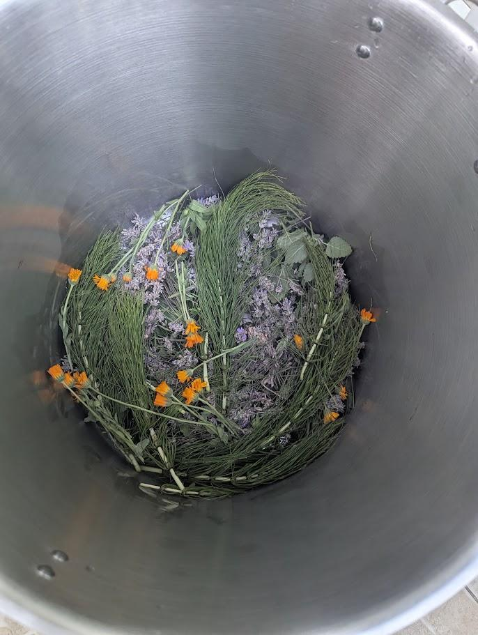
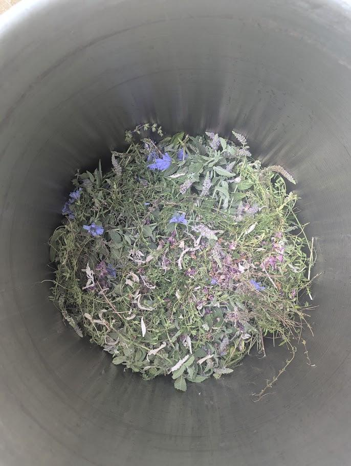
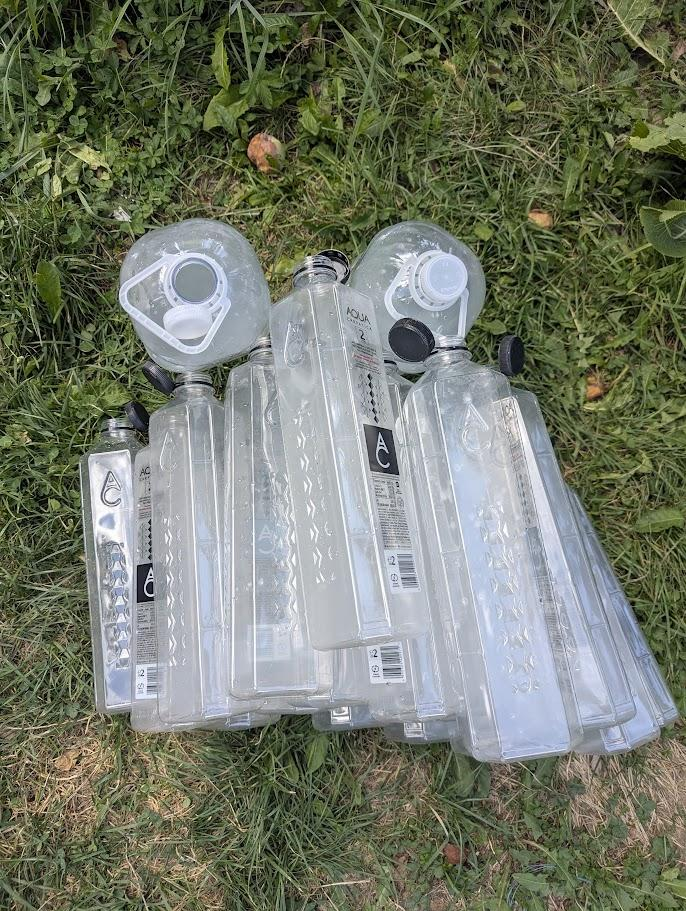
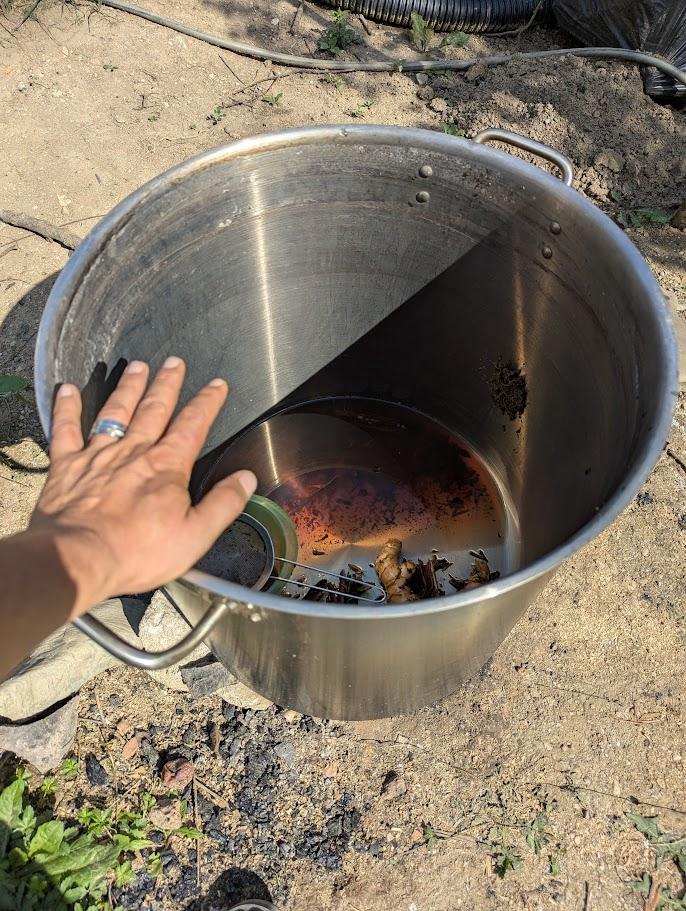
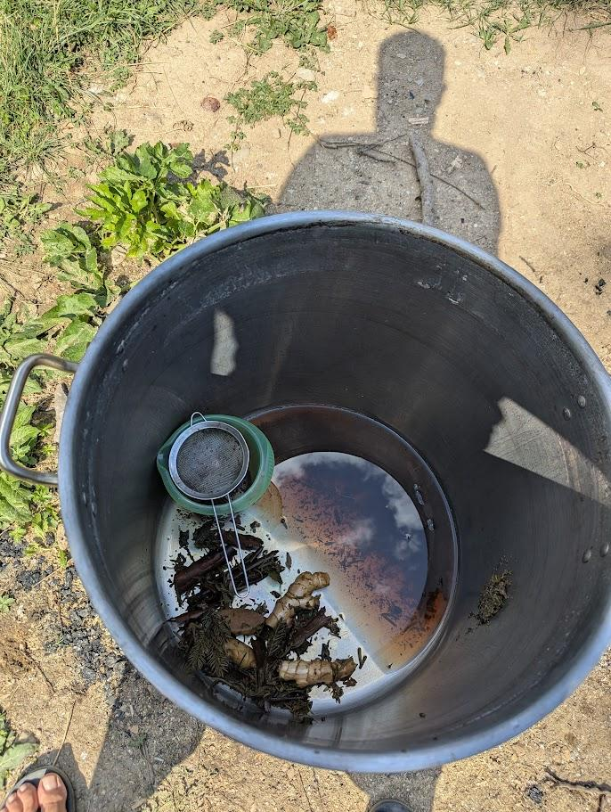
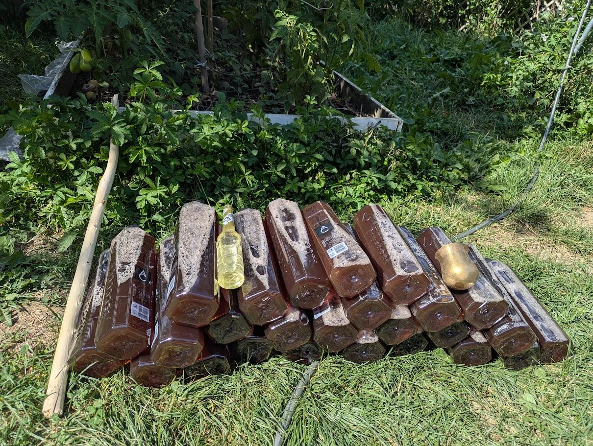

Verdes Medicinas Recipe


Verdes Medicinas Recipe
Created: August 21, 2025 12:16 AM
Recipe Information
Type: [Tea]
Difficulty Level: [Intermediate]
Prep Time: 7-10 hours of preparation
Cook Time: [3-5 hours of cooking]
Total Time: [10-15 hours]
Servings: [70 liters]
Medicinas Verdes

Ingredients
Main Ingredients
- Fresh Mint - 200-300 grams
- Fresh Lavender - 150 -200 grams
- Fresh Melissa
Seasonal Herbs
- Jon’s Worth
- Yarrow
- White Sage
- Rosemarry
- Majoram
- Pine / Fir leaves and buds
- Thyme
- Garden Sage
- Cotton Lavender (small amount)
- Marigold
- Camomille
- Other optionalmedicinal herbs (Galium verum, Eucalyptus young leaves, Verbascum densiflorum, Artemisa, etc)
Spices
- Cinnamon rolls - 1 big roll (40 cm)
- Clove - 75-100 grams
- Anis - 50-75 grams
Equipment Needed
- Big Pot
- Sieve
- Jug
Step-by-Step Instructions
Step 1: Preparation
Description: [Assemble the herbs in the pot]

Instructions:
- Put layers of herbs starting with the Mint, Lavender, Melissa
- Blow mapacho smoke on them
- Put layers of optional herbs on top
- Blow mapacho smoke on them
- Put spices in and arrange them
- Blow mapacho smoke on them
- Sing the Verdes Medicina Icaro
https://media.zgondea.com/3.VerdeVerdeMedicina.mp3




Step 2: Cooking Process
Description: [The cooking takes around 3-4 hours and the medicine should be attended at all times]

Instructions:
- After mounting the pot over the fireplace in a steady position fill it with water up to 2-3 cm from the top
- Start the fire and keep the lid on
- Pour all the love, blessings, prayers into the pot with medicine and sing the Verdes Medicinas icaro as well
- Wait for the medicina to start boiling, usually it spills a little bit.
- At that point you can stop adding wood to the fire and take the lid off
- Wait 10 minutes to 2 hours before removing the plants from the tea depending on how strong and concentrated you want the medicine to be
- Wait for the tea to cool down before proceding to the next step
Step 3: Final Assembly
Description: [Brief description]

Instructions:
- Once the Tea is cooled down you can start blowing mapacho smoke on the tea and on the bottles you want to load up with tea
- After the bottles have been blessed use a jug and a sieve to pour the content into the bottles
- You can bless each bottle individually if it’s for a specific person or ailment.




Icaro 🎵
https://media.zgondea.com/3.VerdeVerdeMedicina.mp3
Chef’s Notes & Tips
Recipe Variations
- Variation 1: [Description of how to modify]
- Variation 2: [Another way to customize]
- Dietary Modifications: [Vegan, gluten-free, etc. options]
Storage Instructions
- Refrigerator: [Can be stored for 2-4 weeks in the Refrigirator]
- Freezer: [Freezing can store it for up to 1 year]
- Reheating: [Always heat it up to hot temperature before consumption or bath - it re-activates it]
Recipe Reviews & Ratings
My Rating: ⭐⭐⭐⭐⭐
Recipe Source & Credits
Original Recipe: [Verdes Medicinas - Jungle of Peru]
Inspiration: [Gumercindo Galindo]
Date Created: August 20, 2025
Created By: @Paul Zgondea